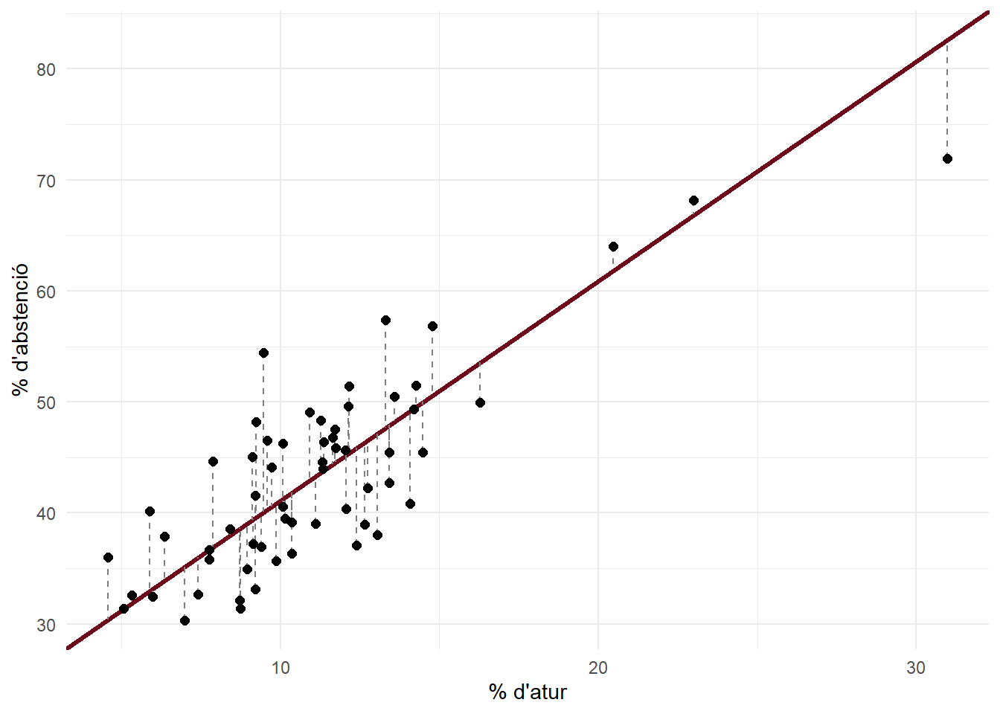
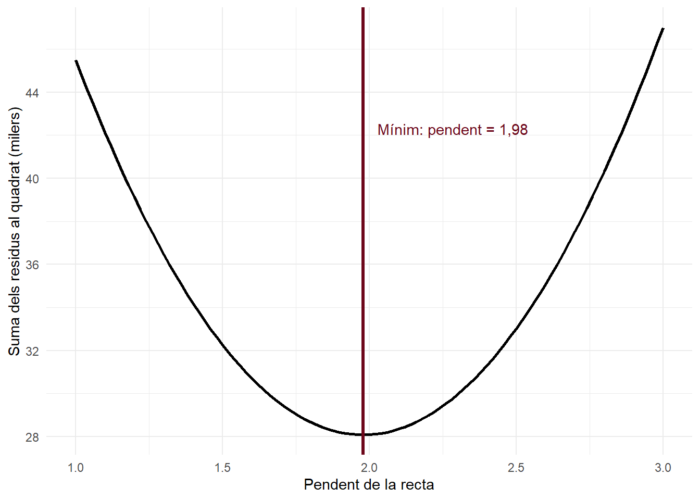
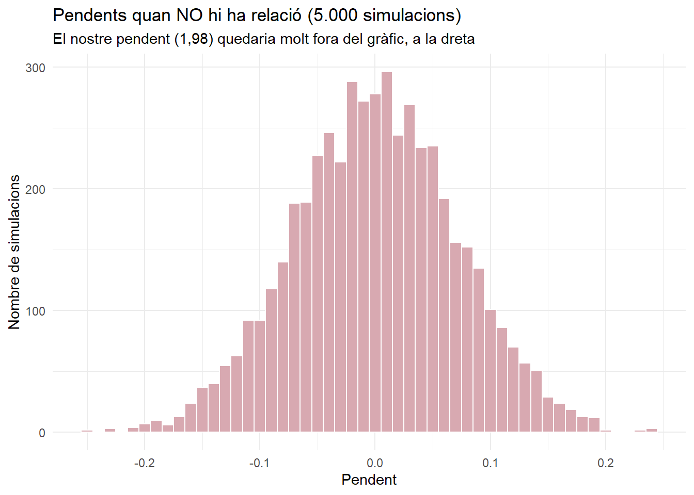

Codi
model
Call:
lm(formula = abstencio ~ perc_atur, data = bcn)
Coefficients:
(Intercept) perc_atur
21.33 1.98 Sessió 4 · Explicació complementària
A les slides hem vist que lm() troba la recta que millor s’ajusta als punts, i que del summary() en mirem els coeficients, el p-valor i el \(R^2\). Aquí veurem, amb el mateix exemple, com troba R la recta, què és el \(R^2\), què vol dir cada número del summary() i d’on surt el p-valor del pendent. No cal entendre el codi (és plegat): n’hi ha prou de llegir el text i mirar els gràfics.
Call:
lm(formula = abstencio ~ perc_atur, data = bcn)
Coefficients:
(Intercept) perc_atur
21.33 1.98 \[\widehat{\text{abstenció}} = 21,33 + 1,98 \cdot \text{atur}\]
Per cada punt més d’atur, l’abstenció és, de mitjana, 1,98 punts més alta. Però per què aquesta recta, i no una altra?
Per a cada secció, la recta fa una predicció (\(\hat{y}\)). La diferència entre l’abstenció real i la predita és l’error o residu:
\[\text{residu} = y - \hat{y}\]
# A tibble: 5 × 5
seccio perc_atur abstencio predita residu
<chr> <dbl> <dbl> <dbl> <dbl>
1 0801901001 15.6 58.3 52.3 6.03
2 0801901002 18.0 62.8 56.9 5.88
3 0801901003 19.4 61.2 59.7 1.46
4 0801901004 16.3 49.9 53.6 -3.65
5 0801901005 21.7 64.6 64.2 0.318Un residu positiu vol dir que la secció s’absté més del que prediu la recta; un de negatiu, menys. Al gràfic, el residu és la distància vertical de cada punt a la recta (aquí, només 60 seccions, perquè es vegi):
residus |>
slice_sample(n = 60) |>
ggplot(aes(x = perc_atur, y = abstencio)) +
geom_abline(intercept = coef(model)[1], slope = coef(model)[2], color = bordeus, linewidth = 1.2) +
geom_segment(aes(xend = perc_atur, yend = predita), linetype = "dashed", color = "grey50") +
geom_point(size = 2) +
labs(x = "% d'atur", y = "% d'abstenció") +
theme_minimal()
Cada recta possible deixa uns residus diferents. Per triar la millor, R eleva cada residu al quadrat (perquè els positius i els negatius no s’anul·lin) i els suma. La millor recta és la que fa aquesta suma mínima: d’aquí el nom de mínims quadrats.
Ho podem veure provant molts pendents diferents (cadascun amb el seu millor intercept) i calculant la suma dels residus al quadrat:
suma_quadrats <- function(pendent) {
intercept <- mean(bcn$abstencio) - pendent * mean(bcn$perc_atur)
sum((bcn$abstencio - (intercept + pendent * bcn$perc_atur))^2)
}
proves <- tibble(pendent = seq(1, 3, by = 0.02)) |>
mutate(suma_quadrats = map_dbl(pendent, suma_quadrats))
ggplot(proves, aes(x = pendent, y = suma_quadrats / 1000)) +
geom_line(linewidth = 1) +
geom_vline(xintercept = coef(model)[2], color = bordeus, linewidth = 1.2) +
annotate("text", x = coef(model)[2] + 0.05, y = max(proves$suma_quadrats) / 1000 * 0.9,
hjust = 0, color = bordeus,
label = paste0("Mínim: pendent = ", num(coef(model)[2]))) +
labs(x = "Pendent de la recta", y = "Suma dels residus al quadrat (milers)") +
theme_minimal()
La suma és mínima just al pendent que dona lm(). No cal provar-los tots: hi ha unes fórmules que el donen directament,
\[b = r \cdot \frac{s_y}{s_x} \qquad a = \bar{y} - b \cdot \bar{x}\]
# A tibble: 1 × 3
r pendent intercept
<dbl> <dbl> <dbl>
1 0.847 1.98 21.3Fixeu-vos que el pendent depèn de la correlació: si \(r = 0\), el pendent és 0 (recta plana).
Sense saber res de l’atur, la millor predicció de l’abstenció de cada secció seria la mitjana de totes. Els errors d’aquesta predicció mesuren la variació total de l’abstenció. Amb la recta, els errors són més petits: la diferència és el que explica l’atur.
\[R^2 = 1 - \frac{\text{suma de quadrats dels residus (amb la recta)}}{\text{suma de quadrats total (amb la mitjana)}}\]
# A tibble: 1 × 3
sq_total sq_residus r_quadrat
<dbl> <dbl> <dbl>
1 99234. 28083. 0.717Amb la recta, els errors (al quadrat) són un 72 % més petits que amb la mitjana: l’atur explica el 72 % de la variació de l’abstenció. I, en una regressió amb una sola X, el \(R^2\) és la correlació al quadrat: \(0,85^2 = 0,72\).
summary(), número a número
Call:
lm(formula = abstencio ~ perc_atur, data = bcn)
Residuals:
Min 1Q Median 3Q Max
-21.0230 -3.3103 -0.1281 3.0342 18.9882
Coefficients:
Estimate Std. Error t value Pr(>|t|)
(Intercept) 21.33351 0.44662 47.77 <2e-16 ***
perc_atur 1.97954 0.03809 51.97 <2e-16 ***
---
Signif. codes: 0 '***' 0.001 '**' 0.01 '*' 0.05 '.' 0.1 ' ' 1
Residual standard error: 5.133 on 1066 degrees of freedom
Multiple R-squared: 0.717, Adjusted R-squared: 0.7167
F-statistic: 2701 on 1 and 1066 DF, p-value: < 2.2e-16| Part | Què és |
|---|---|
Residuals |
Com es reparteixen els residus (mínim, quartils, màxim). Si la mediana és a prop de 0 i són més o menys simètrics, bon senyal |
Estimate |
Els coeficients: l’intercept i el pendent |
Std. Error |
L’error estàndard de cada coeficient: com podria variar d’una mostra a una altra (sessió 2) |
t value |
Estimate / Std. Error: a quants errors estàndard del 0 és el coeficient |
Pr(>|t|) |
El p-valor. \(H_0\): el coeficient és 0 (cap relació) |
Residual standard error |
L’error típic de les prediccions: de mitjana, ens equivoquem uns 5,1 punts d’abstenció |
Multiple R-squared |
El \(R^2\) |
Adjusted R-squared |
El \(R^2\) corregit pel nombre de variables (útil en la regressió múltiple) |
F-statistic |
Un contrast del model sencer (com l’ANOVA de la sessió 3). Amb una sola X, diu el mateix que el p-valor del pendent |
El mateix raonament de la sessió 3: si l’atur no tingués cap relació amb l’abstenció, quins pendents sortirien per atzar? Barregem l’abstenció entre les seccions 5.000 vegades i calculem el pendent cada vegada:
pendents_atzar <- map_dbl(1:5000, function(i) {
coef(lm(sample(abstencio) ~ perc_atur, data = bcn))[2]
})
ggplot(tibble(pendent = pendents_atzar), aes(x = pendent)) +
geom_histogram(binwidth = 0.01, fill = bordeus_clar, color = "white") +
labs(title = "Pendents quan NO hi ha relació (5.000 simulacions)",
subtitle = paste0("El nostre pendent (", num(coef(model)[2]),
") quedaria molt fora del gràfic, a la dreta"),
x = "Pendent", y = "Nombre de simulacions") +
theme_minimal()
[1] -0.2520002 0.2399879Per atzar, els pendents queden entre -0,25 i 0,24. El nostre, 1,98, és molt lluny: el p-valor és pràcticament 0. La relació és significativa.
summary(), el més important: Estimate, Pr(>|t|) i R-squared.---
title: "La regressió lineal, pas a pas"
subtitle: "Sessió 4 · Explicació complementària"
code-fold: true
code-tools: true
---
```{r setup, include=FALSE, warning=FALSE, message=FALSE}
set.seed(1234)
library(tidyverse)
bordeus <- "#6D071A"
bordeus_clar <- "#D8A9B1"
# Números amb coma decimal per al text
num <- function(x, d = 2) format(round(unname(x), d), nsmall = d, decimal.mark = ",", big.mark = ".")
seccions <- read_csv2("../dades/seccions_censals.csv", show_col_types = FALSE)
bcn <- seccions |> filter(municipi == "Barcelona")
model <- lm(abstencio ~ perc_atur, data = bcn)
```
::: {.callout-note}
## Què hi trobareu?
A les slides hem vist que `lm()` troba la recta que millor s'ajusta als punts, i que del `summary()` en mirem els coeficients, el p-valor i el $R^2$. Aquí veurem, amb el mateix exemple, **com troba R la recta**, **què és** el $R^2$, **què vol dir cada número** del `summary()` i **d'on surt** el p-valor del pendent. No cal entendre el codi (és plegat): n'hi ha prou de llegir el text i mirar els gràfics.
:::
## 1. On érem: abstenció segons atur
```{r}
model
```
$$\widehat{\text{abstenció}} = `r num(coef(model)[1])` + `r num(coef(model)[2])` \cdot \text{atur}$$
Per cada punt més d'atur, l'abstenció és, de mitjana, `r num(coef(model)[2])` punts més alta. Però per què aquesta recta, i no una altra?
## 2. Els errors (residus)
Per a cada secció, la recta fa una **predicció** ($\hat{y}$). La diferència entre l'abstenció real i la predita és l'**error** o **residu**:
$$\text{residu} = y - \hat{y}$$
```{r}
residus <- bcn |>
mutate(predita = predict(model), # l'abstenció que prediu la recta
residu = abstencio - predita) # real menys predita
residus |>
select(seccio, perc_atur, abstencio, predita, residu) |>
head(5)
```
Un residu **positiu** vol dir que la secció s'absté **més** del que prediu la recta; un de **negatiu**, menys. Al gràfic, el residu és la distància **vertical** de cada punt a la recta (aquí, només 60 seccions, perquè es vegi):
```{r}
residus |>
slice_sample(n = 60) |>
ggplot(aes(x = perc_atur, y = abstencio)) +
geom_abline(intercept = coef(model)[1], slope = coef(model)[2], color = bordeus, linewidth = 1.2) +
geom_segment(aes(xend = perc_atur, yend = predita), linetype = "dashed", color = "grey50") +
geom_point(size = 2) +
labs(x = "% d'atur", y = "% d'abstenció") +
theme_minimal()
```
## 3. Per què «mínims quadrats»?
Cada recta possible deixa uns residus diferents. Per triar la millor, R **eleva cada residu al quadrat** (perquè els positius i els negatius no s'anul·lin) i els **suma**. La millor recta és la que fa aquesta suma **mínima**: d'aquí el nom de **mínims quadrats**.
Ho podem veure provant molts pendents diferents (cadascun amb el seu millor intercept) i calculant la suma dels residus al quadrat:
```{r}
suma_quadrats <- function(pendent) {
intercept <- mean(bcn$abstencio) - pendent * mean(bcn$perc_atur)
sum((bcn$abstencio - (intercept + pendent * bcn$perc_atur))^2)
}
proves <- tibble(pendent = seq(1, 3, by = 0.02)) |>
mutate(suma_quadrats = map_dbl(pendent, suma_quadrats))
ggplot(proves, aes(x = pendent, y = suma_quadrats / 1000)) +
geom_line(linewidth = 1) +
geom_vline(xintercept = coef(model)[2], color = bordeus, linewidth = 1.2) +
annotate("text", x = coef(model)[2] + 0.05, y = max(proves$suma_quadrats) / 1000 * 0.9,
hjust = 0, color = bordeus,
label = paste0("Mínim: pendent = ", num(coef(model)[2]))) +
labs(x = "Pendent de la recta", y = "Suma dels residus al quadrat (milers)") +
theme_minimal()
```
La suma és mínima just al pendent que dona `lm()`. No cal provar-los tots: hi ha unes fórmules que el donen directament,
$$b = r \cdot \frac{s_y}{s_x} \qquad a = \bar{y} - b \cdot \bar{x}$$
```{r}
bcn |>
summarise(r = cor(perc_atur, abstencio),
pendent = r * sd(abstencio) / sd(perc_atur),
intercept = mean(abstencio) - pendent * mean(perc_atur))
```
Fixeu-vos que el pendent depèn de la **correlació**: si $r = 0$, el pendent és 0 (recta plana).
## 4. El $R^2$: quina part expliquem
Sense saber res de l'atur, la millor predicció de l'abstenció de cada secció seria la **mitjana** de totes. Els errors d'aquesta predicció mesuren la **variació total** de l'abstenció. Amb la recta, els errors són més petits: la diferència és el que **explica** l'atur.
$$R^2 = 1 - \frac{\text{suma de quadrats dels residus (amb la recta)}}{\text{suma de quadrats total (amb la mitjana)}}$$
```{r}
residus |>
summarise(sq_total = sum((abstencio - mean(abstencio))^2), # errors amb la mitjana
sq_residus = sum(residu^2), # errors amb la recta
r_quadrat = 1 - sq_residus / sq_total)
```
Amb la recta, els errors (al quadrat) són un `r round(summary(model)$r.squared * 100)` % més petits que amb la mitjana: l'atur explica el `r round(summary(model)$r.squared * 100)` % de la variació de l'abstenció. I, en una regressió amb una sola X, el $R^2$ és la correlació al quadrat: $`r num(cor(bcn$perc_atur, bcn$abstencio))`^2 = `r num(summary(model)$r.squared)`$.
## 5. El `summary()`, número a número
```{r}
summary(model)
```
| Part | Què és |
|---|---|
| `Residuals` | Com es reparteixen els residus (mínim, quartils, màxim). Si la mediana és a prop de 0 i són més o menys simètrics, bon senyal |
| `Estimate` | Els **coeficients**: l'intercept i el pendent |
| `Std. Error` | L'**error estàndard** de cada coeficient: com podria variar d'una mostra a una altra (sessió 2) |
| `t value` | `Estimate` / `Std. Error`: a quants errors estàndard del 0 és el coeficient |
| `Pr(>|t|)` | El **p-valor**. $H_0$: el coeficient és 0 (cap relació) |
| `Residual standard error` | L'error típic de les prediccions: de mitjana, ens equivoquem uns `r num(summary(model)$sigma, 1)` punts d'abstenció |
| `Multiple R-squared` | El $R^2$ |
| `Adjusted R-squared` | El $R^2$ corregit pel nombre de variables (útil en la regressió múltiple) |
| `F-statistic` | Un contrast del model sencer (com l'ANOVA de la sessió 3). Amb una sola X, diu el mateix que el p-valor del pendent |
: {tbl-colwidths="[25,75]"}
## 6. D'on surt el p-valor del pendent?
El mateix raonament de la sessió 3: si l'atur **no** tingués cap relació amb l'abstenció, quins pendents sortirien per atzar? **Barregem** l'abstenció entre les seccions 5.000 vegades i calculem el pendent cada vegada:
```{r}
pendents_atzar <- map_dbl(1:5000, function(i) {
coef(lm(sample(abstencio) ~ perc_atur, data = bcn))[2]
})
ggplot(tibble(pendent = pendents_atzar), aes(x = pendent)) +
geom_histogram(binwidth = 0.01, fill = bordeus_clar, color = "white") +
labs(title = "Pendents quan NO hi ha relació (5.000 simulacions)",
subtitle = paste0("El nostre pendent (", num(coef(model)[2]),
") quedaria molt fora del gràfic, a la dreta"),
x = "Pendent", y = "Nombre de simulacions") +
theme_minimal()
range(pendents_atzar)
```
Per atzar, els pendents queden entre `r num(min(pendents_atzar))` i `r num(max(pendents_atzar))`. El nostre, `r num(coef(model)[2])`, és molt lluny: el p-valor és pràcticament 0. La relació és significativa.
## En resum
1. Els **residus** són la diferència entre el valor real i el que prediu la recta.
2. La recta de regressió és la que fa **mínima** la suma dels residus al quadrat.
3. El **$R^2$** compara els errors amb la recta i amb la mitjana: és la part de la variació que explica la X.
4. Del `summary()`, el més important: **`Estimate`**, **`Pr(>|t|)`** i **`R-squared`**.
5. El **p-valor** del pendent diu si un pendent com el nostre podria sortir per atzar si no hi hagués relació.